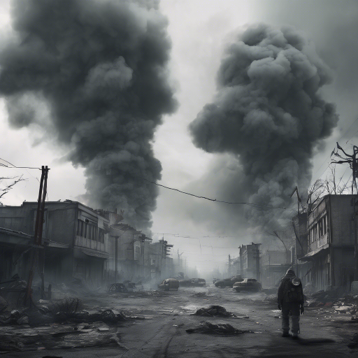

Egy posztapokaliptikus lapozgatós kaland
Életerő: 12 pontod van. Ha 0-ra csökken, meghalsz. Kezdeti Felszerelés: Egy rozsdás pisztoly (2 ÉP sebzés), 1 energiaszelet (+4 ÉP bármikor felhasználhatod), térkép egy régi katonai bunkerhez. Az ÉP det pedig egy lapon számold. Ha harcra kerül sor, azt külön jelezzük. Döntéseid a kaland sorsát alakítják.
